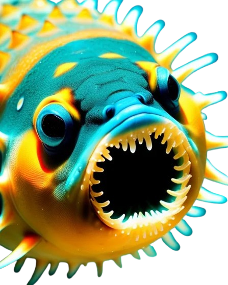

En cuestión de segundos, la escena pasó de maravillosa a terrorífica. La sonrisa encantadora del pececito se transformó en una mueca siniestra, revelando hileras de dientes afilados como cuchillas. Sus ojos, antes brillantes y amigables, se volvieron negros como el vacío del espacio profundo.
El Dr. Martínez gritó órdenes para alejarse, pero era demasiado tarde. Con una velocidad sobrenatural, el Pececito Sonriente, ahora convertido en una bestia voraz, embistió contra el submarino. El impacto sacudió la nave, haciendo que los equipos se tambalearan y las alarmas comenzaran a sonar.
Mientras la tripulación luchaba por mantener el control, pudieron ver a través de las ventanillas cómo otros seres marinos huían despavoridos. Incluso un enorme calamar gigante, conocido por ser uno de los depredadores más temidos del océano profundo, se alejaba a toda velocidad, sus tentáculos agitándose frenéticamente en el agua oscura.
Se ha detectado una amenaza crítica. Todos los submarinos y embarcaciones deben evacuar la zona inmediatamente.